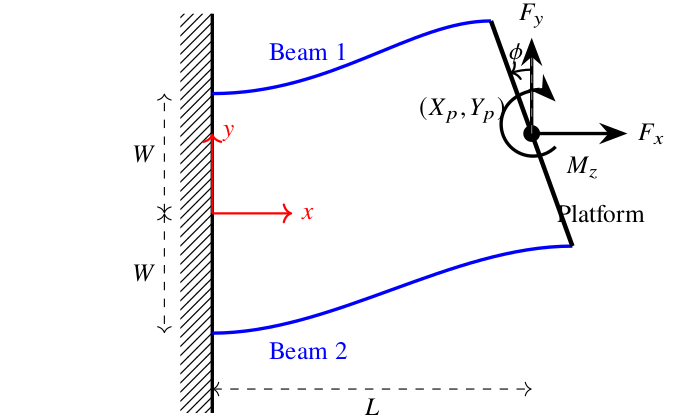
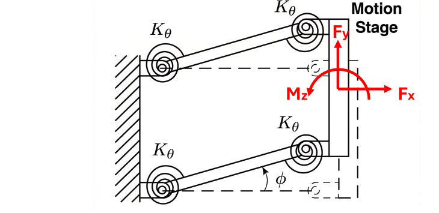
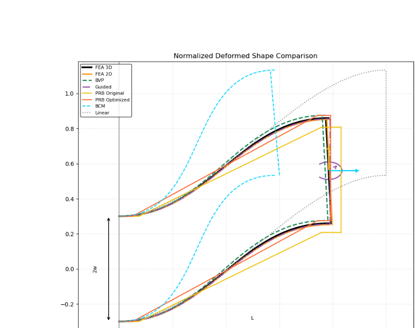
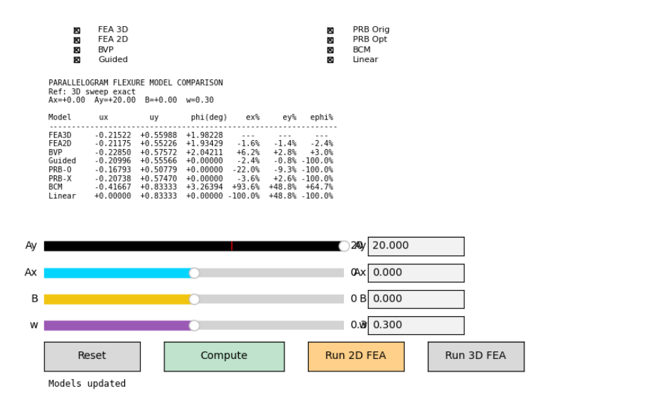

An Open-Source Hierarchical Multi-fidelity Modeling Stack for Design and Analysis of Compliant Mechanisms
Submitted to ASME Journal of Mechanisms and Robotics — under review (2026)




Abstract
This paper presents an open-source, hierarchical, eight-level multi-fidelity modeling stack as a comprehensive technical routine for the design and analysis of compliant mechanisms, utilizing the widely adopted parallelogram flexure as a representative case study. Our methodology involves the systematic implementation, integration, and cross-validation of modeling levels spanning from first-order linear beam theories and refined pseudo-rigid-body models (PRBM) with optimized characteristic radius factors, to intermediate beam constraint models (BCM), exact transcendental solutions for fixed-guided beams, numerical boundary value problem (BVP) systems, and high-fidelity 3-D solid finite element analysis (FEA). All solvers, benchmarking datasets, and interactive tools have been developed as an open-source contribution to facilitate community adoption and further research. Major results demonstrate an excellent performance spread of over eight orders of magnitude in computational runtime, ranging from sub-microsecond algebraic evaluations to solid-mesh simulations requiring nearly a minute per load case. Furthermore, we quantify the localized divergence of low-fidelity models in predicting critical second-order effects, such as parasitic rotations and nonlinear softening/stiffening behavior near buckling thresholds. Based on the summary of these benchmark test results, a practical model selection guide is concluded to assist designers in selecting optimal modeling fidelities for various flexure systems, facilitating the rapid synthesis of precision mechanisms with guaranteed accuracy across expansive workspaces.
Keywords: compliant mechanisms, multi-fidelity modeling, beam constraint model, pseudo-rigid-body model, finite element analysis, large deflections.
Results
The eight-level stack was cross-validated on a parallelogram flexure across the full range of applied loads. Every level was benchmarked against a high-fidelity 3D solid FEA reference to quantify both computational cost (Table 9) and predictive accuracy (Table 10). The resulting performance envelope spans more than eight orders of magnitude in runtime, giving designers a principled way to trade speed against fidelity within a single consistent framework.
| Model Level | Class | Speed-up vs. FEA 3D |
|---|---|---|
| FEA 3D | Solid-element reference | 1× (reference) |
| FEA 2D | Plane-stress / shell | 3.51×101 |
| Euler BVP | Exact transcendental BVP | 1.55×101 |
| Guided BVP | Fixed-guided BVP | 1.40×104 |
| PRB (Optimized γ) | Pseudo-rigid-body | ∼4.50×106 |
| PRB (Standard) | Pseudo-rigid-body | ∼4.50×106 |
| BCM | Beam constraint model | 1.28×107 |
| Linear Beam | First-order closed-form | 1.18×108 |
| Model Level | Case 1 (αx=0, β=0) | Case 2 (αx=−5, β=0) | Case 3 (αx=0, β=3) | |||
|---|---|---|---|---|---|---|
| |αy| < 5 | 5 ≤ |αy| ≤ 20 | |αy| < 5 | 5 ≤ |αy| ≤ 20 | |αy| < 5 | 5 ≤ |αy| ≤ 20 | |
| L1: Linear Beam | 4.8 / 100 / 100 | 23.3 / 100 / 100 | 20.0 / 100 / 100 | 13.1 / 100 / 100 | 3.6 / 100 / 100 | 21.1 / 100 / 100 |
| L2: BCM | 4.8 / 8.8 / 2.4 | 23.3 / 43.0 / 28.0 | 6.7 / 11.8 / 2.4 | 36.9 / 72.0 / 42.3 | 3.6 / 6.4 / 0.8 | 21.8 / 36.9 / 17.3 |
| L3: Guided Beam | 3.7 / 6.9 / 100 | 1.9 / 3.6 / 100 | 4.6 / 7.2 / 100 | 2.1 / 4.4 / 100 | 2.5 / 4.5 / 100 | 1.5 / 3.3 / 100 |
| L4: Euler BVP† | 3.8 / 7.0 / 74.9 | 3.4 / 6.8 / 11.4 | 4.9 / 7.6 / 64.3 | 4.1 / 8.5 / 6.9 | 3.2 / 6.1 / 74.2 | 3.5 / 7.0 / 12.3 |
| L5: PRB (Std.) | 15.3 / 30.3 / 100 | 12.1 / 25.7 / 100 | 35.4 / 61.6 / 100 | 27.0 / 50.6 / 100 | 16.3 / 31.9 / 100 | 13.6 / 28.8 / 100 |
| L6: PRB (Opt.) | 1.0 / 6.1 / 100 | 2.3 / 4.0 / 100 | 15.2 / 36.2 / 100 | 15.2 / 36.2 / 100 | 0.3 / 2.8 / 100 | 0.5 / 7.9 / 100 |
| L7: FEA 2D | 0.9 / 1.4 / 3.5 | 1.1 / 1.6 / 2.3 | 1.1 / 1.9 / 3.7 | 1.4 / 2.0 / 2.9 | 0.7 / 2.3 / 76.8 | 1.2 / 4.8 / 49.4 |
| L8: FEA 3D (Ref.) | — | — | — | — | — | — |
† L4 MAPE reported only over convergent cases; the Euler BVP solver fails to converge in extreme compression/deflection regimes.
Low-fidelity models remain accurate for the dominant transverse displacement uy under modest loading, but their error in parasitic axial displacement ux and platform rotation φ grows rapidly near the buckling threshold. The BCM excels in rotation prediction for small deflections, while only the Euler BVP, 2D FEA, and 3D FEA reference capture nonlinear softening/stiffening behavior under compressive loads. The Optimized-γ PRB consistently outperforms the Standard PRB on primary displacements and remains more numerically robust than Euler BVP near buckling limits.
Model Selection Guide
The benchmark sweep enables a validated roadmap for designers. Based on the performance spread and error localization observed across all three load cases, the authors recommend:
- Rapid Synthesis & Optimization. For computationally demanding tasks such as design synthesis, optimization, or real-time control, the Beam Constraint Model (BCM) is recommended for small to intermediate deflections (|αy| < 5), particularly when predictions of shortening ux and stage rotation φ under non-compressive loads are required.
- Large-Deflection Analysis. In the large-deflection regime (5 ≤ |αy| ≤ 20), the Optimized PRB model (γ=0.90) offers the best balance of speed and robustness—sub-millisecond runtimes while keeping transverse-deflection errors typically below 5% in non-compressive regimes.
- High-Fidelity Screening. For final design validation or high-precision analysis, a local mesh-based solver (FreeCAD / CalculiX) is the gold standard. Where a mesh solver is unavailable, 2D Beam FEA provides 1–5% accuracy throughout the deflection range up to αy=20 in 1–2 seconds; failing that, the Euler BVP beam solver is recommended.
- Interactive Design & Parasitic Analysis. For interactive tooling that requires high-fidelity feedback on parasitic rotation φ, use the Guided Beam solver (∼3 ms) or the Euler BVP solver. When stage-rotation prediction is not strictly required, the Optimized PRB is preferred for workspace exploration near buckling limits thanks to its superior numerical robustness.
Open-Source Tools & Scripts
- Main repository — all solvers, benchmarks, and tooling: haijunsu-osu/parallelogram_model_comparison
- Interactive multi-fidelity comparison GUI (
comparison/compare_models_gui.py): overlays deformed shapes and performance metrics from all eight levels in real time. - Preprint PDF (local copy): CM_model_stack_journal.pdf
BibTeX
@unpublished{SuServey2026-CM-Stack,
title = {An Open-Source Hierarchical Multi-fidelity Modeling Stack for Design and Analysis of Compliant Mechanisms},
author = {Su, Hai-Jun and Servey, Benjamin},
note = {Submitted to ASME Journal of Mechanisms and Robotics; under review},
year = {2026},
url = {https://su-idr-lab.github.io/projects/parallelogram_model_comparison/index.html}
}